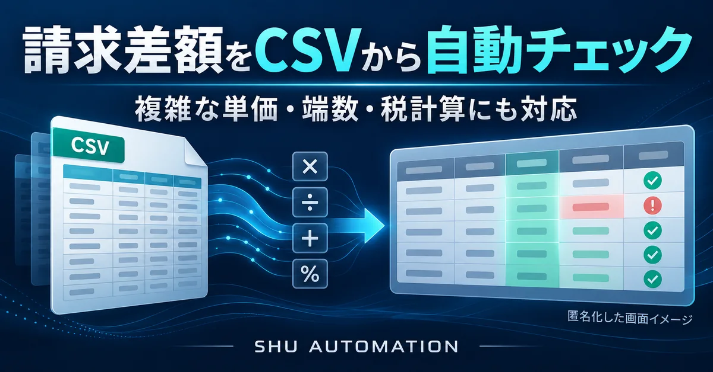
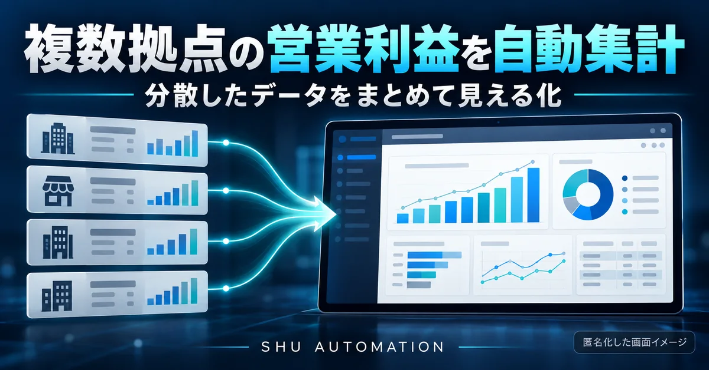
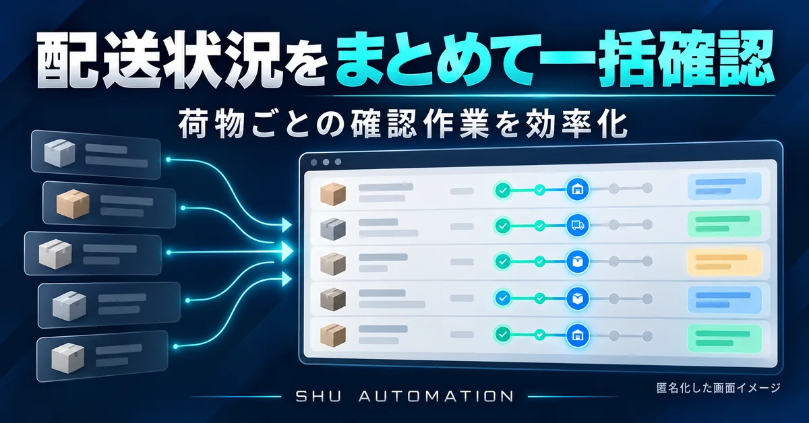
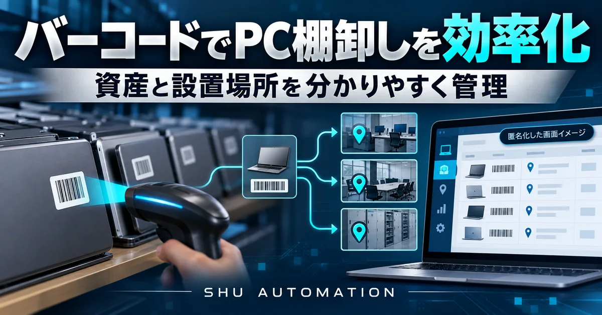
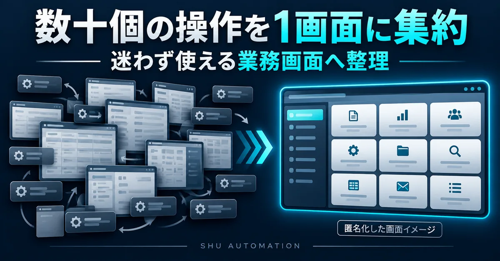
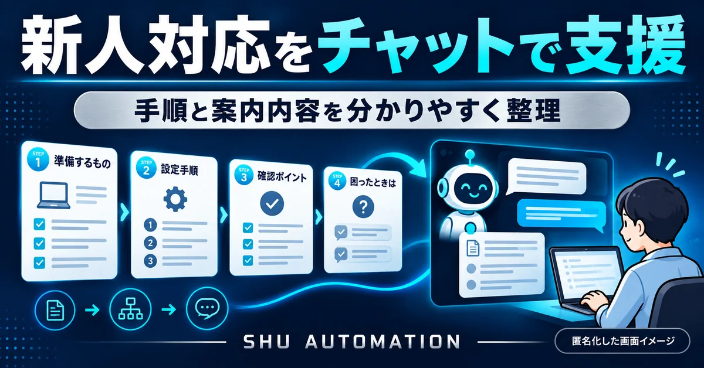

Excel・CSV
転記、照合、集計など、時間のかかる定型作業を整理します。
SMALL BUSINESS AUTOMATION
Excel・CSV・集計・帳票・業務自動化。
小さな改善から相談できます。
個人事業・小規模事業・日々の事務作業に。
YOUTUBE SHORTS
ExcelやPC作業の改善、自動化の考え方を、短い動画で分かりやすく発信しています。
YouTube Shortsを見る ↗WHAT WE IMPROVE
大きなシステムを入れる前に、まずは繰り返している作業や分かりにくい表を見直します。
転記、照合、集計など、時間のかかる定型作業を整理します。
一覧データから請求書や報告書をまとめて作る流れを整えます。
誰が見ても迷いにくい画面、手順、確認方法へ改善します。
今の環境と運用に合わせ、現実的な改善方法をご提案します。
SERVICE
内容が固まっていなくても大丈夫です。まず作業を伺い、合う進め方を整理します。
繰り返している転記・整形・確認など、小さな作業から改善します。
請求書・報告書など、一覧データから複数の書類をまとめて生成します。
転記・集計・整理など、毎月繰り返す作業を使いやすい形へ改善します。
WORKS
公開可能な範囲で、課題・改善内容・効果を整理しています。顧客名や機密情報は掲載していません。






ABOUT
単に自動化するだけではなく、実際にその作業をする人が迷わず使えることを大切にしています。
仕組みが複雑すぎると、改善したはずの仕事が新しい負担になります。SHU AUTOMATIONは、今の作業や使う人の状況を理解し、続けやすい形を一緒に考えます。
FREE CHECK
5問・約1分で無料チェック
NEWS
サービス改善や新しい事例など、SHU AUTOMATIONの更新情報を掲載します。
SHU AUTOMATION公式サイトを公開しました。
CONTACT